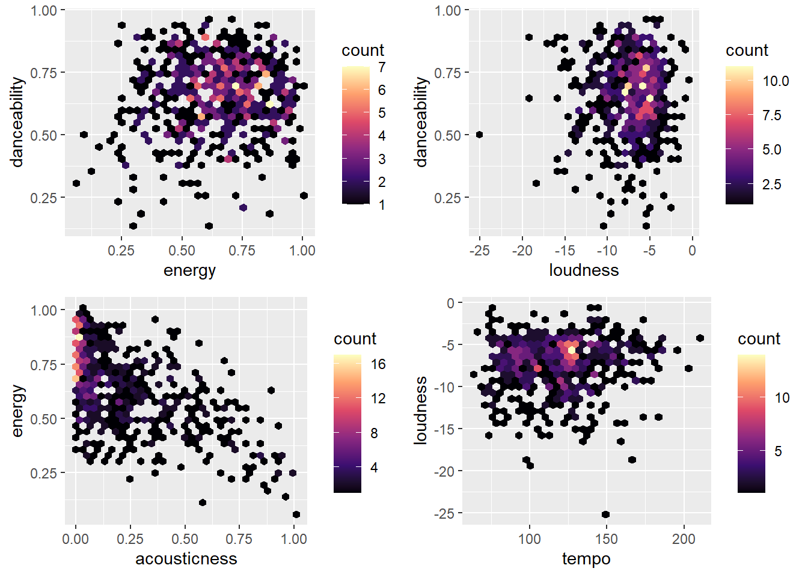
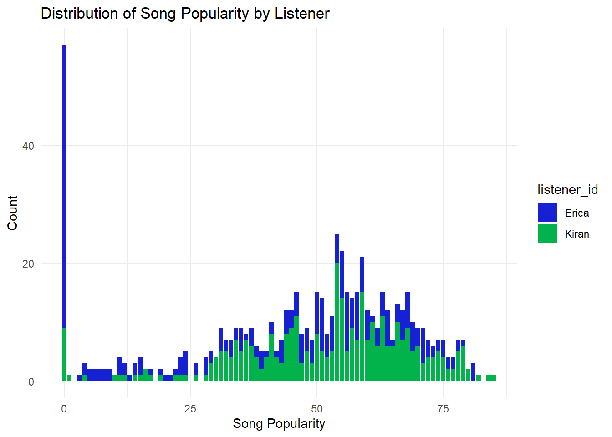
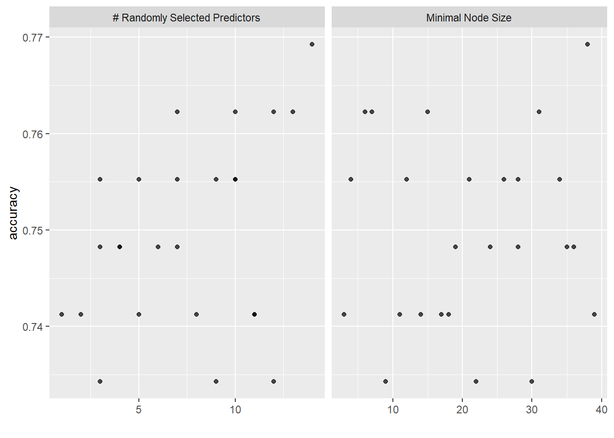
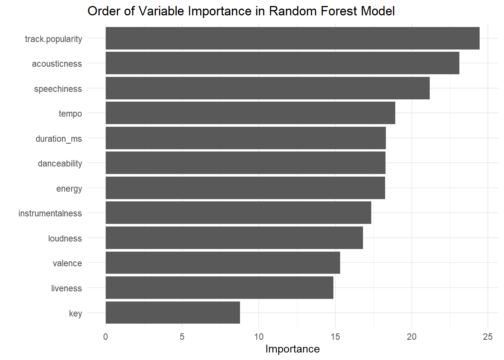

Sys.setenv(SPOTIFY_CLIENT_ID = 'your_token')
Sys.setenv(SPOTIFY_CLIENT_SECRET = 'your_token')
access_token <- get_spotify_access_token(
client_id = Sys.getenv("SPOTIFY_CLIENT_ID"),
client_secret = Sys.getenv("SPOTIFY_CLIENT_SECRET")
)Introduction
I love listening to all types of music, and used machine learning models in R to understand my taste a little bit better and compare my friend and my music taste!
I began by requesting data from the Spotify API and using the data on my liked songs to build a model that is a binary classifier. To do so, I will be using three Machine Learning algorithms:
K-Nearest Neighbor
Decision Tree Model
Random Forest Model
Accessing Spotify API
To begin gathering data from the Spotify API, I have to create and access a token containing the client ID and client secret. To do so, I began by navigating to Spotify for Developers and created an application. More information on accessing the Spotify API can be found in the documentation.
Here, I am setting them as system values so I don’t have to provide the client ID & secret each time the API is used, and combining them to create an access token.
Data Preparation
The function ‘get_my_saved_tracks()’ from the spotifyr package will request all my liked tracks on Spotify. However, when called, the Spotify API will only return a dataframe with 50 tracks at a time.
saved_tracks <- get_my_saved_tracks() #function from the spotifyr packageSince I want to analyze all my likes, I will have to make many requests. Instead of doing this manually, I’ll use a function to combine all the requests into one call.
#writing a function to combine my requests into one call since this function only returns up to 50 tracks at a time when called
get_saved_tracks <- function(limit = 50,
authorization,
offset = 0) {
tracks <- data.frame()
for (i in 1:7) {
new_tracks <- get_my_saved_tracks(limit = limit,
offset = offset)
tracks <- rbind(tracks,
as.data.frame(new_tracks))
offset <- offset + limit
}
return(tracks)
}
my_tracks <- get_saved_tracks(authorization = access_token)Now that I have all my liked songs, I am going to request more information from the Spotify API to understand my taste better. To do so, I will give the API a list of my song IDs using the function get_track_audio_features. This will return a dataframe of audio features, including the tracks and their attributes.
my_audio_features <- data.frame() # create base empty data frame
for(i in seq(from = 1, to = 350, by = 100)) { # loop through all songs
# collect 100 rows starting from i
row_index <- i:(i + 99)
# pull out features for set rows
audio <- get_track_audio_features(my_tracks$track.id[row_index])
# add features to dataframe
my_audio_features <- rbind(my_audio_features, audio)
}
my_audio_features <- drop_na(my_audio_features)# add songs_data$track.name
kiran_audio <- cbind(my_audio_features,
track.name = my_tracks$track.name,
track.popularity = my_tracks$track.popularity)
kiran_audio <- kiran_audio %>%
select(-c(uri, track_href, analysis_url, type, id))
#make a csv
write_csv(kiran_audio, "kiran_audio.csv")Now, I swapped data with my friend, Erica. Since I want to compare our music tastes, I began by combining our data into a new dataframe.
#read in erica's data
erica_audio <- read_csv("ericas_audio.csv")
#add listener id column
kiran_audio <- kiran_audio %>%
mutate(listener_id = 'Kiran')
kiran_erica_audio <- rbind(kiran_audio, erica_audio)
#downloading combined data into a csv
write_csv(combined_audio, "combined_audio.csv")Here I loaded in the downloaded dataframe, and appended a column called ‘listener_id’ so I know whose tracks are whose.
#combining our data
combined_audio <- read_csv(here("posts",
"2023-09-07_spotify",
"combined_audio.csv")) %>%
mutate(listener_id = as.factor(listener_id))Data Exploration
Now that I have prepared the data with the steps above, I can start exploring some aspects of my data, my friend’s, and compare them!
First, I wanted to look at all the variables that the Spotify API includes when accessing audio features.
audio_features <- combined_audio %>%
colnames() %>%
as.data.frame()
#removing the first row of insignificant data
audio_features_table <- as.data.frame(audio_features[-1,])
#renaming column to audio feature
colnames(audio_features_table)[1] <- "Audio Features"audio_features_table Audio Features
1 ...2
2 danceability
3 energy
4 key
5 loudness
6 mode
7 speechiness
8 acousticness
9 instrumentalness
10 liveness
11 valence
12 tempo
13 duration_ms
14 time_signature
15 track.name
16 track.popularity
17 listener_idI’m also curious about the relationship between some of the variables mentioned above..
#danceability and energy
hexplot_1 <- ggplot(data = combined_audio,
aes(energy, danceability)) +
geom_hex() +
scale_fill_viridis_c(option = "magma")
#danceability and loudness
hexplot_2 <- ggplot(data = combined_audio,
aes(loudness, danceability)) +
geom_hex() +
scale_fill_viridis_c(option = "magma")
#acousticness and energy
hexplot_3 <- ggplot(data = combined_audio,
aes(acousticness, energy)) +
geom_hex() +
scale_fill_viridis_c(option = "magma")
#acousticness and energy
hexplot_4 <- ggplot(data = combined_audio,
aes(tempo, loudness)) +
geom_hex() +
scale_fill_viridis_c(option = "magma")
ggarrange(hexplot_1, hexplot_2, hexplot_3, hexplot_4)
Now, I’ll compare who has more popular songs!
combined_audio %>%
arrange(desc(track.popularity)) %>%
select(track.popularity,
track.name,
listener_id) %>%
rename('track name' = track.name,
'listener' = listener_id) %>%
head(8) %>%
kable()| track.popularity | track name | listener |
|---|---|---|
| 85 | Neverita | Kiran |
| 84 | Escapism. - Sped Up | Kiran |
| 82 | Pink + White | Kiran |
| 81 | Beggin’ | Erica |
| 81 | All The Stars (with SZA) | Erica |
| 81 | Let Me Down Slowly | Erica |
| 80 | Formula | Kiran |
| 80 | Un Coco | Kiran |
Looks like I have a the most popular songs in this dataset from this little snippet. Now I’ll visualize the data to get a better picture.
#visualize the data!
#who listens to more popular track
popularity_plot <- ggplot(data = combined_audio, aes(x = track.popularity)) +
geom_bar(aes(fill = listener_id)) +
labs(title = "Distribution of Song Popularity by Listener",
x = "Song Popularity", y = "Count") +
scale_fill_manual(values = c("#1721d4", "#02b34b")) +
theme_minimal()
popularity_plot
Modeling
As I mentioned earlier, I will create two models, a K-Nearest Neighbor model and a decision tree model. Now that I have the data prepared and I understand it better, I can make these models predict whether a track belongs to me or Erica’s Spotify list.
I’m starting by splitting the data into three sets: testing, splitting, and training data sets.
#remove track id & index
combined_audio <- combined_audio %>%
select(-c(...1,...2,track.name))
#set seed for reproducibility
set.seed(711)
#split the data
audio_split <- initial_split(combined_audio)
audio_test <- testing(audio_split)
audio_train <- training(audio_split)Now, I will run through the three algorithms mentioned above. With each model, I will go through the following steps:
Preprocessing: Using a step function and recipe on the training data.
Set model specification: Tune specification of model with hyper parameters to finding best version of model. I will use cross validation folds to do this, which basically breaks the data into 10 sections, leaving 1 section as test data and rest are training. Then R continues thing process through all the broken up sections of data to determine the best hyper-parameters. The model will create predictions of 0 or 1 based on this tuning step.
Model fitting: Then we fit the model with the best hyper-parameters onto the test data we split at beginning.
MODEL #1: K-Nearest Neighbors
#preprocessing
#recipe always define by training data
music_rec <- recipe(listener_id ~.,
data = audio_train) %>%
step_dummy(all_nominal(),
-all_outcomes(),
one_hot = TRUE) %>%
step_normalize(all_numeric(),
-all_outcomes()) %>%
prep()
#bake
baked_audio <- bake(music_rec, audio_train)
#apply recipe to test data
baked_test <- bake(music_rec, audio_test)
#specify knn model
knn_spec <- nearest_neighbor() %>%
set_engine("kknn") %>%
set_mode("classification")
#resampling folds
cv_folds <- audio_train %>%
vfold_cv(v = 5)
#put together into workflow
knn_workflow <- workflow() %>%
add_model(knn_spec) %>%
add_recipe(music_rec)
#fit resamples
knn_resample <- knn_workflow %>%
fit_resamples(
resamples = cv_folds,
control = control_resamples(save_pred = TRUE)
)#Define our KNN model with tuning
knn_spec_tuned <-
nearest_neighbor(neighbors = tune()) %>%
set_mode("classification") %>%
set_engine("kknn")
#Check the model
knn_spec_tunedK-Nearest Neighbor Model Specification (classification)
Main Arguments:
neighbors = tune()
Computational engine: kknn # Define a new workflow
wf_knn_tuned <- workflow() |>
add_model(knn_spec_tuned) |>
add_recipe(music_rec)
# Fit the workflow on our predefined folds and hyperparameters
fit_knn_cv <- wf_knn_tuned |>
tune_grid(
cv_folds, #tuning based on these folds
grid = data.frame(neighbors = c(1,5, seq(10,100,10)))
)
# Check the performance with collect_metrics()
fit_knn_cv |> collect_metrics()# A tibble: 24 × 7
neighbors .metric .estimator mean n std_err .config
<dbl> <chr> <chr> <dbl> <int> <dbl> <chr>
1 1 accuracy binary 0.633 5 0.0342 Preprocessor1_Model01
2 1 roc_auc binary 0.633 5 0.0400 Preprocessor1_Model01
3 5 accuracy binary 0.658 5 0.0356 Preprocessor1_Model02
4 5 roc_auc binary 0.708 5 0.0462 Preprocessor1_Model02
5 10 accuracy binary 0.667 5 0.0299 Preprocessor1_Model03
6 10 roc_auc binary 0.731 5 0.0374 Preprocessor1_Model03
7 20 accuracy binary 0.667 5 0.0182 Preprocessor1_Model04
8 20 roc_auc binary 0.744 5 0.0229 Preprocessor1_Model04
9 30 accuracy binary 0.677 5 0.0173 Preprocessor1_Model05
10 30 roc_auc binary 0.750 5 0.0160 Preprocessor1_Model05
# ℹ 14 more rowsfinal_knn_wf <- wf_knn_tuned |>
finalize_workflow(select_best(fit_knn_cv,
metric = "accuracy"))
# Fitting our final workflow
final_knn_fit <- final_knn_wf |>
fit(data = audio_train)
music_pred <- final_knn_fit |>
predict(new_data = audio_test)
# Write over 'final_fit' with this last_fit() approach
final_knn_fit <- final_knn_wf |>
last_fit(audio_split)
final_knn_fit$.predictions[[1]]
# A tibble: 159 × 6
.pred_Erica .pred_Kiran .row .pred_class listener_id .config
<dbl> <dbl> <int> <fct> <fct> <chr>
1 0.266 0.734 1 Kiran Kiran Preprocessor1_Model1
2 0.529 0.471 2 Erica Kiran Preprocessor1_Model1
3 0.215 0.785 5 Kiran Kiran Preprocessor1_Model1
4 0.533 0.467 10 Erica Kiran Preprocessor1_Model1
5 0.392 0.608 11 Kiran Kiran Preprocessor1_Model1
6 0.594 0.406 30 Erica Kiran Preprocessor1_Model1
7 0.366 0.634 31 Kiran Kiran Preprocessor1_Model1
8 0.699 0.301 34 Erica Kiran Preprocessor1_Model1
9 0.416 0.584 35 Kiran Kiran Preprocessor1_Model1
10 0.401 0.599 41 Kiran Kiran Preprocessor1_Model1
# ℹ 149 more rows# Collect metrics on the test data
knn_metrics <- final_knn_fit |>
collect_metrics()
knn_metrics# A tibble: 2 × 4
.metric .estimator .estimate .config
<chr> <chr> <dbl> <chr>
1 accuracy binary 0.667 Preprocessor1_Model1
2 roc_auc binary 0.758 Preprocessor1_Model1MODEL #2: DECISION TREE
#preprocess
dec_tree_rec <- recipe(listener_id ~ .,
data = audio_train) %>%
step_dummy(all_nominal(),
-all_outcomes(),
one_hot = TRUE) %>%
step_normalize(all_numeric(),
-all_outcomes())#dec tree specification tuned to the optimal parameters
#tell the model that we are tuning hyperparams
dec_tree_spec_tune <- decision_tree(
cost_complexity = tune(), #to tune, call tune()
tree_depth = tune(),
min_n = tune()) %>%
set_engine("rpart") %>%
set_mode("classification")
dec_tree_grid <- grid_regular(cost_complexity(),
tree_depth(),
min_n(),
levels = 4)
dec_tree_grid # A tibble: 64 × 3
cost_complexity tree_depth min_n
<dbl> <int> <int>
1 0.0000000001 1 2
2 0.0000001 1 2
3 0.0001 1 2
4 0.1 1 2
5 0.0000000001 5 2
6 0.0000001 5 2
7 0.0001 5 2
8 0.1 5 2
9 0.0000000001 10 2
10 0.0000001 10 2
# ℹ 54 more rowsdoParallel::registerDoParallel() #build trees in parallel
#200s
dec_tree_rs <- tune_grid(
dec_tree_spec_tune,
as.factor(listener_id)~.,
resamples = cv_folds,
grid = dec_tree_grid,
metrics = metric_set(accuracy)
)
dec_tree_rs# Tuning results
# 5-fold cross-validation
# A tibble: 5 × 4
splits id .metrics .notes
<list> <chr> <list> <list>
1 <split [379/95]> Fold1 <tibble [64 × 7]> <tibble [0 × 3]>
2 <split [379/95]> Fold2 <tibble [64 × 7]> <tibble [0 × 3]>
3 <split [379/95]> Fold3 <tibble [64 × 7]> <tibble [0 × 3]>
4 <split [379/95]> Fold4 <tibble [64 × 7]> <tibble [0 × 3]>
5 <split [380/94]> Fold5 <tibble [64 × 7]> <tibble [0 × 3]># Selecting best models
show_best(dec_tree_rs)# A tibble: 5 × 9
cost_complexity tree_depth min_n .metric .estimator mean n std_err
<dbl> <int> <int> <chr> <chr> <dbl> <int> <dbl>
1 0.0000000001 10 14 accuracy binary 0.675 5 0.0177
2 0.0000001 10 14 accuracy binary 0.675 5 0.0177
3 0.0001 10 14 accuracy binary 0.675 5 0.0177
4 0.0000000001 15 14 accuracy binary 0.675 5 0.0177
5 0.0000001 15 14 accuracy binary 0.675 5 0.0177
# ℹ 1 more variable: .config <chr>select_best(dec_tree_rs)# A tibble: 1 × 4
cost_complexity tree_depth min_n .config
<dbl> <int> <int> <chr>
1 0.0000000001 10 14 Preprocessor1_Model25# Finalizing our model
final_dec_tree <- finalize_model(dec_tree_spec_tune,
select_best(dec_tree_rs))
final_dec_tree_fit <- last_fit(final_dec_tree,
as.factor(listener_id) ~.,
audio_split)
# Outputting Metrics
final_dec_tree_fit$.predictions[[1]]
# A tibble: 159 × 6
.pred_Erica .pred_Kiran .row .pred_class `as.factor(listener_id)` .config
<dbl> <dbl> <int> <fct> <fct> <chr>
1 0.114 0.886 1 Kiran Kiran Preproces…
2 0.875 0.125 2 Erica Kiran Preproces…
3 0.667 0.333 5 Erica Kiran Preproces…
4 0.0732 0.927 10 Kiran Kiran Preproces…
5 0.0732 0.927 11 Kiran Kiran Preproces…
6 0.0357 0.964 30 Kiran Kiran Preproces…
7 0.455 0.545 31 Kiran Kiran Preproces…
8 0.952 0.0476 34 Erica Kiran Preproces…
9 0.114 0.886 35 Kiran Kiran Preproces…
10 0.778 0.222 41 Erica Kiran Preproces…
# ℹ 149 more rowsdec_tree_metrics <- final_dec_tree_fit %>%
collect_metrics()
dec_tree_metrics# A tibble: 2 × 4
.metric .estimator .estimate .config
<chr> <chr> <dbl> <chr>
1 accuracy binary 0.648 Preprocessor1_Model1
2 roc_auc binary 0.689 Preprocessor1_Model1Then validate and compare the performance of the models I made
MODEL #3: Random Forest
# Define validating set
validation_set <- validation_split(audio_train,
strata = listener_id,
prop = 0.70)
# random forest spec
rand_forest_spec <-
rand_forest(mtry = tune(),
min_n = tune(),
trees = 1000) %>%
set_engine("ranger") %>%
set_mode("classification")
# random forest workflow
rand_forest_workflow <- workflow() %>%
add_recipe(music_rec) %>%
add_model(rand_forest_spec)
# buuild in parallel
doParallel::registerDoParallel()
rand_forest_res <-
rand_forest_workflow %>%
tune_grid(validation_set,
grid = 25,
control = control_grid(save_pred = TRUE),
metrics = metric_set(accuracy))i Creating pre-processing data to finalize unknown parameter: mtry## model metrics
rand_forest_res %>% collect_metrics()# A tibble: 25 × 8
mtry min_n .metric .estimator mean n std_err .config
<int> <int> <chr> <chr> <dbl> <int> <dbl> <chr>
1 9 30 accuracy binary 0.734 1 NA Preprocessor1_Model01
2 3 35 accuracy binary 0.748 1 NA Preprocessor1_Model02
3 4 19 accuracy binary 0.748 1 NA Preprocessor1_Model03
4 5 14 accuracy binary 0.741 1 NA Preprocessor1_Model04
5 7 7 accuracy binary 0.762 1 NA Preprocessor1_Model05
6 9 28 accuracy binary 0.755 1 NA Preprocessor1_Model06
7 3 9 accuracy binary 0.734 1 NA Preprocessor1_Model07
8 8 18 accuracy binary 0.741 1 NA Preprocessor1_Model08
9 12 31 accuracy binary 0.762 1 NA Preprocessor1_Model09
10 11 3 accuracy binary 0.741 1 NA Preprocessor1_Model10
# ℹ 15 more rows# find best accuracy metric
rand_forest_res %>%
show_best(metric = "accuracy")# A tibble: 5 × 8
mtry min_n .metric .estimator mean n std_err .config
<int> <int> <chr> <chr> <dbl> <int> <dbl> <chr>
1 14 38 accuracy binary 0.769 1 NA Preprocessor1_Model19
2 7 7 accuracy binary 0.762 1 NA Preprocessor1_Model05
3 12 31 accuracy binary 0.762 1 NA Preprocessor1_Model09
4 10 15 accuracy binary 0.762 1 NA Preprocessor1_Model13
5 13 6 accuracy binary 0.762 1 NA Preprocessor1_Model25# plot
autoplot(rand_forest_res)
# choose best random forest model
best_rand_forest <- select_best(rand_forest_res, "accuracy")
best_rand_forest# A tibble: 1 × 3
mtry min_n .config
<int> <int> <chr>
1 14 38 Preprocessor1_Model19# output preds
rand_forest_res %>%
collect_predictions()# A tibble: 3,575 × 7
id .pred_class .row mtry min_n listener_id .config
<chr> <fct> <int> <int> <int> <fct> <chr>
1 validation Kiran 5 9 30 Kiran Preprocessor1_Model01
2 validation Erica 6 9 30 Erica Preprocessor1_Model01
3 validation Kiran 7 9 30 Kiran Preprocessor1_Model01
4 validation Erica 13 9 30 Kiran Preprocessor1_Model01
5 validation Kiran 14 9 30 Kiran Preprocessor1_Model01
6 validation Erica 21 9 30 Erica Preprocessor1_Model01
7 validation Kiran 24 9 30 Erica Preprocessor1_Model01
8 validation Kiran 27 9 30 Kiran Preprocessor1_Model01
9 validation Erica 33 9 30 Erica Preprocessor1_Model01
10 validation Kiran 35 9 30 Kiran Preprocessor1_Model01
# ℹ 3,565 more rows# final model working in parallel
doParallel::registerDoParallel()
last_rand_forest_model <-
rand_forest(mtry = 2, min_n = 3, trees = 1000) %>%
set_engine("ranger", importance = "impurity") %>%
set_mode("classification")
#Updating our workflow
last_rand_forest_workflow <-
rand_forest_workflow %>%
update_model(last_rand_forest_model)
# Updating our model fit
last_rand_forest_fit <-
last_rand_forest_workflow %>%
last_fit(audio_split)
# Outputting model metrics
rand_forest_metrics <- last_rand_forest_fit %>%
collect_metrics()
rand_forest_metrics# A tibble: 2 × 4
.metric .estimator .estimate .config
<chr> <chr> <dbl> <chr>
1 accuracy binary 0.748 Preprocessor1_Model1
2 roc_auc binary 0.829 Preprocessor1_Model1# find most important variables to our model
last_rand_forest_fit %>%
extract_fit_parsnip() %>%
vip::vip(num_features = 12) +
ggtitle("Order of Variable Importance in Random Forest Model") +
theme_minimal()
# nearest neighbors metrics
knn_accuracy <- knn_metrics$.estimate[1]
# decision tree metrics
dec_tree_accuracy <- dec_tree_metrics$.estimate[1]
# random forest metrics
random_forest_accuracy <- rand_forest_metrics$.estimate[1]
model_accuracy <- tribble(
~"model", ~"accuracy",
"K-Nearest Neighbor", knn_accuracy,
"Decision Tree", dec_tree_accuracy,
"Random Forest", random_forest_accuracy
)
# Plotting bar chart to compare models accuracy
ggplot(data = model_accuracy, aes(x = model,
y = accuracy)) +
geom_col(fill = c("red","purple","blue")) +
theme_minimal() +
labs(title = "Comparison of Model Accuracy for Spotify Data",
x = "Model",
y = "Accuracy")
This analysis suggests that the Random Forest model has the best accuracy at 69.2% and the worst model is the Decision Tree model with 64.8% accuracy.
Citation
BibTeX citation:
@online{favre2023,
author = {Favre, Kiran},
title = {Exploring {Music} {Tastes} with {Machine} {Learning}},
date = {2023-09-07},
url = {https://kiranfavre.github.io/posts/2023-09-07/},
langid = {en}
}
For attribution, please cite this work as:
Favre, Kiran. 2023. “Exploring Music Tastes with Machine
Learning.” September 7, 2023. https://kiranfavre.github.io/posts/2023-09-07/.